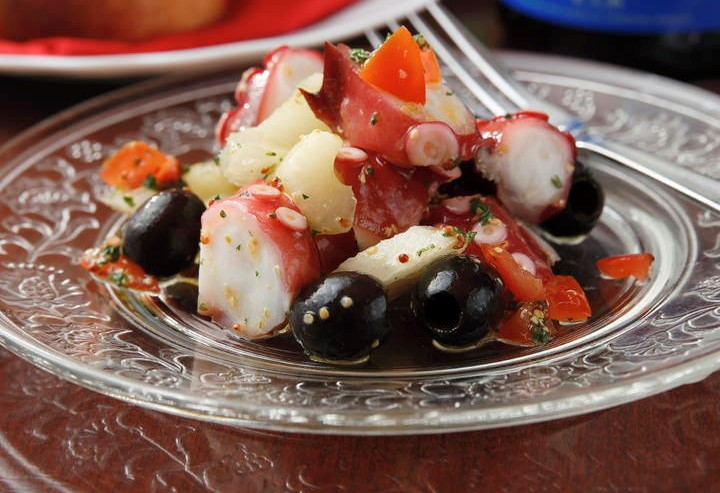

イタリアン CIT
こだわり１
豊富な日替わりメニュー！！

旬の美味しいお野菜、魚、お肉で
美味しい料理を提供しております。
毎日変わるおすすめメニューも大人気です。
ワインと一緒にお楽しみ下さい。
こだわり２
気軽に立ち寄れるワイン酒場
ワインに合わせた
リーズナブルで美味しい
アラカルトメニューも豊富です！！
オーナーが美味しいと思う
ワインを取り揃えてます。
お気軽にふらっとお立ち寄り下さいね
こだわり３
美味しいパーティーコース

お得なコースメニューは2980円から
3種類ございます。
飲み放題付きコースも人気です。
女子会、お仲間との
ご宴会におすすめです。
こだわり４
リーズナブルな日替わりグラスワイン

コスパ最高の美味しいワインを
取り揃えております。
日替わりグラスワインは580円〜
美味しいワインを気軽にお楽しみください。
ボトルワインも各種ご用意しております。
住所
〒999-999
奈良氏之市都田沼１２３
TEL:０００－１２３４－５６７８
ダイニングバー
イタリアン CIT
営業時間
ランチ：11:00~14:00
ディナー：17:00~22:00
オーナーシェフが厳選した絶品チーズを使ったメニューも人気です。
ワインとチーズをお楽しみください。
皆様のご来店をお待ちしています。